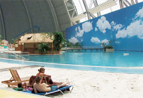

Hinterland

Marie Voignier – France 2009 – 49 min.
Sc+DOP+E: Marie Voignier – S: Ralf Kuester – P: Capricci
Digital – German
Prix des Médiathèques, FID Marseille
A few buildings in the middle of nowhere, then the camera delves deep into exotic, luxuriant vegetation. Here we were are in Tropical Islands, a leisure complex near Krausnick, a village 70 kilometres south of Berlin on the site of a former Soviet airbase. In this spot, and moving from one affectation to another, the upheavals of the last century pile up like so much sediment. – Europe’s scars and contradictions, its men- tal space, its dreams and illusions. – Nicolas Féodoroff
Friday 10/10 8.30 p.m. Werkstattkino – Guest: Marie Voignier
Marie Voignier, born in 1974 in Ris-Orangis, France, moves between documentary and visual arts. In 2010 she had a first solo exhibition held in gallery Marcelle Alix.
Films (selection): Les fantômes 2004 – Western DDR 2005 – Le bruit du canon 2006 – Au travail 2008 – Hinterland 2009 (9. UX) – Hearing the Shape of a Drum 2010 – L'hypothèse du Mokélé-Mbembé 2011 – Tourisme International 2014 (9. UX)